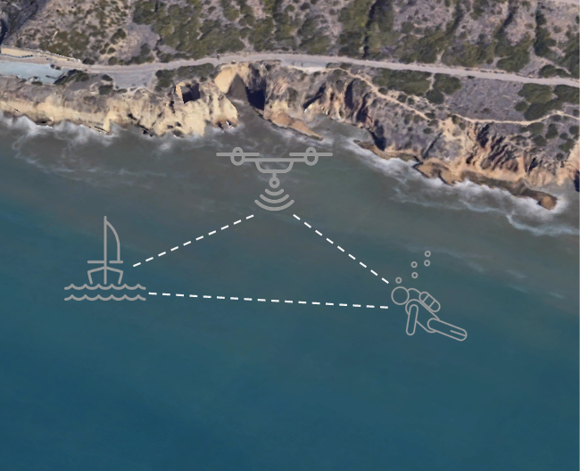
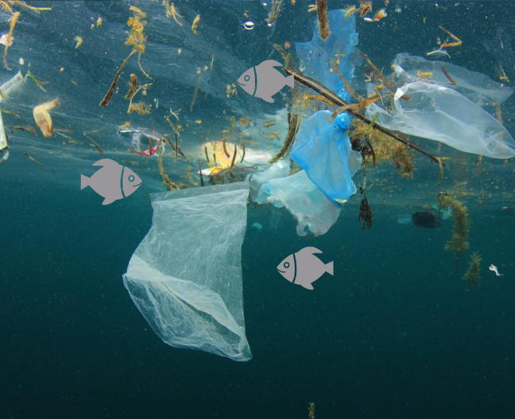
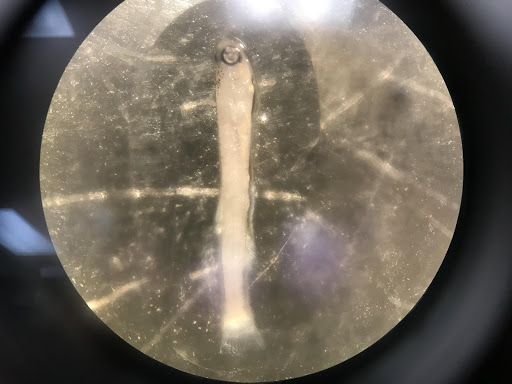

1.
Space-based earth observation and spectrometric analysis of marine pollution accumulations

2. In-situ marine pollution measurements combining available data on water quality and observations

3. Water sampling using strip transects, GPS units, and measuring devices

4. Microscopic investigation of the collected samples
Microplastic pollution monitoring in the California-Mexico coastal region
Microplastic pollution has been detected in all water bodies around the world. Microplastic debris is amongst the principal sources of anthropogenic pollution in the California-Mexico coastal region, and jeopardizes the health and subsistence of marine ecosystems increasing the risk of ingestion and chemical contamination. Central aims of this study are the monitoring, measurement, and reporting of microplastic accumulation in coastal waters along the US-Mexico border. The following research questions will be addressed: (RQ1) What are the magnitude, location, and temporal variability of microplastic accumulations? (RQ2) What are the composition, spatio-temporal distribution, and abundance of microplastic accumulations? (RQ3) What are the main physical and anthropogenic processes influencing the transport and accumulation of microplastics? To answer these questions, the study employs a fourfold methodological approach: (1) Space-based earth observation and spectrometric analysis of marine pollution accumulations; (2) In-situ marine pollution measurements combining available data on water quality and observations; (3) Water sampling using strip transects, GPS units, and measuring devices; (4) Microscopic investigation of the collected samples. Expected results aim to provide a holistic and comprehensive understanding of microplastic pollution cycles. This study also provides a number of implications for coastal and environmental managers, the maritime and tourism industry, and coastal populations that rely on marine resources for their livelihood. If you are interested to join our team or support our research please get in contact with Carol Maione, carol.maione@polimi.it. Identifying microplastics - webinar